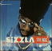
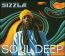
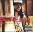

Sizzla / Stay Focus Sizzla / Stay Focus |
|  |
Sizzlaの2004年秋の作品。1作 : 1プロデューサーの形をとることが多い最近のSizzlaだが、今回ではPhillip "Fattis"
Burrellとがっぷり四つに組んでいる。そんなわけで甘さは少なめで、全般的にストレートでハードコア、押しの強いトラックが並ぶ。SizzlaのVoも力強く、特に荒々しさを強調した曲が多い気がする。 |
Freddie McGregor / Comin' In Tough |
|
40年にわたって活動を続ける大ベテランレゲエシンガーFreddie McGregorの3年ぶりの新作。こちらも重鎮のBobby Dixonが半数以上のProduceを手がけているのが目玉であろうが、一体感は文句なしだ。Freddieのほうもゆったりとしたグルーブの上で、時には真摯に、特には余裕で唄いあげていて貫禄十分。ファミリー作もあって、ハートウォームで心が洗われるような作品です。 |
| Sizzla / Soul Deep |
|  |
Sizzlaの2005年最新作。Rise To Occaionに続いてDonovan Bennettに全面プロデュースを任せている。そのDonovanの紡ぎだすR&BっぽいサウンドはUSの一線トラックメイカーと比べても十分に斬新的。逆にSillzaの歌唱はまぎれもなくレゲエの王道で、感情表現に一層の磨きがかかっている。ある意味異質な組み合わせだが、見事にマッチしていて、全く違和感が無く、稀有なケミストリーを生み出している。 |
| Beenie Man / Back To Basics |
|  |
レゲエ界の第一人者Beenie Manの2004年秋の作品。今回はダンスホール中心で、ヒット曲①がトップに配置されている。R&B, Hip-Hop界からの助っ人もTimabalandくらいで、そのProduce曲もBeenie
Manのマナーにあわせている。そんなわけで、単調になりそうなのだが、適度な緩急と楽曲のレベルが高さで容易に全体を聴きとおすことができた。中身がキッチリつまっているアルバム。 |
| Beenie Man / Art & Life |
|
現在のレゲエを代表するトップアーティストの一人Beenie Manの最新作。２面性をもったアルバムになっていて、一つは今のキングストンのダンスホール
サウンドを堪能できること。もう一面は数々の異ジャンルからのGuestとの共演を楽しめること。これらが混ざり合って全体的にここちよいグルーブを醸し出している。 |
![[Go Review Page]](http://gs.cdnow.com/graphics/COVERART/AMG/M/58/39/D58397Y3QID.jpg) |
Sizzla /Good Ways |
| Morgan Heritage / Don't Haffi Dread |
![[Go Review Page]](http://gs.cdnow.com/graphics/COVERART/AMG/M/37/76/D377625JD9W.jpg) |
![[Go Review Page]](http://gs.cdnow.com/graphics/COVERART/local/M/11/68/00141168.jpg) |
Bounty Killer / 5th Element |


![[Go Review Page]](http://gs.cdnow.com/graphics/COVERART/local/M/71/11/00077111.jpg)